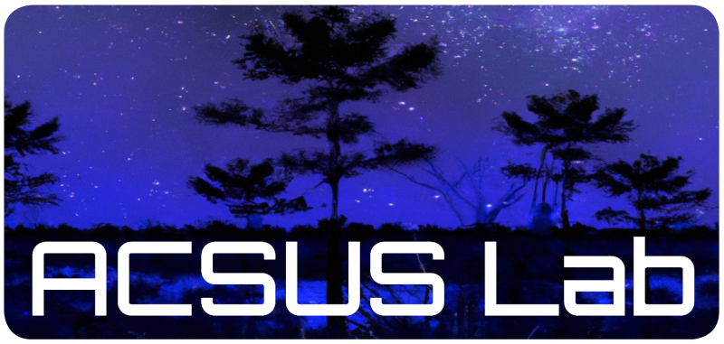
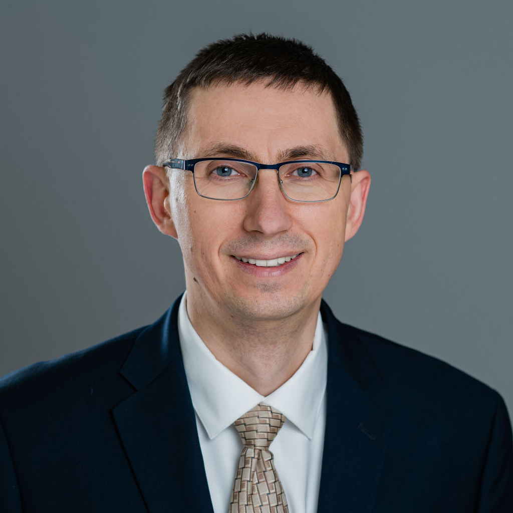

Robinson Hall, 3rd floor

ACSUS Lab studies transactional cyber systems: how a digital action stays correct, accountable, and usable as it moves across people, machines, and organizations. The lab is in the Department of Computer Science at Rowan University. The aim is a cyberspace that can scale, take on new technology such as post-quantum cryptography and transactions drafted by language models, and still be something a person can use.
Four directions organize the work. Self-sovereign digital identity is established by possession of cryptographic keys. With colleagues in Psychology and Mathematics, the lab measures whether people can remember and recover those keys. Transactions stated as constraints let a complex workflow be checked before it commits. The Open Transaction Interoperability Protocol (OTIP) is an open way for separate transactional systems to work together. Students are implementing OTIP as TxCyOS.
A self-sovereign identity is established by possession of cryptographic keys. A systematization of 47 publications and 12 production systems finds that self-sovereignty in deployed systems is a spectrum. A separate study tests whether a person can memorize a full 128-bit key and recover one that is only partly remembered.
With Dr. Brian Pugliese (Psychology) and Dr. Charalampos Papachristou (Mathematics), the lab asks whether people can use the guarantees a transaction gives them. In a 92-person SOUPS trial of 128-bit keys, combinatorial search recovered 50% of partly forgotten graphical keys and 34.1% of partly forgotten 12-word phrases, with the security bound intact.
The lab is developing transactions stated as constraints. The aim is to check a complex workflow, including one drafted by a language model, before it commits.
OTIP is an open protocol so separate transactional systems can work together. Students are implementing it as TxCyOS. BYOW, a related protocol, lets a participant confirm a private transaction with witnesses they choose. The witnesses do not see the contents and do not keep a copy. The department’s Contributor Membership in the Decentralized Identity Foundation is the standards path for this work.
Students in Computer Science Research II also publish on the security of systems already in use, including Ethereum’s state trie and coordination during disruption.
Recent peer-reviewed papers from the lab. Students are first authors.

M.S. student. Benjamin Dobkin.
Undergraduate researchers. Brian Abenojar, Lukas Allsopp, Luke Beard, Braden Elsworth, James Fogg, Michael Jones, Adam Mahrous, John Shelly, Douglas Tranz, Mustafa Yildiz, Cecilia Young, and Will Zakroff.
Undergraduates join through Computer Science Research I (CS 99390) and Computer Science Research II (CS 99490). Master’s students join through the thesis sequence. Ph.D. students are part of the Computer Science Ph.D. program. The lab’s research is also taught as Introduction to Transactional Cyber Systems (CS 06489) and Transactional Cyber Systems (CS 06689). The lab holds a weekly group meeting. Write to ivanov@rowan.edu.